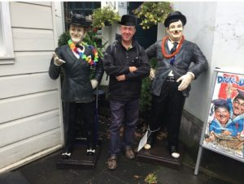
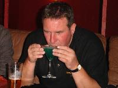

For many years now, several members of the group and associates/colleagues have ventured to places of cultural interest further, purely in the interests of research you understand.
Future possible trips include:
GERMANY
Hessen and Thuringia visiting the Edersee dam. Also check out the town of Erfurt and Goslar.
Squarrites ‘have a nice one in Meissen’, (East)
Leipzig, Germany (East) Squarrites Zig zag
Freiburg, Germany. Squarrites enjoy a Fry up.
Rothenburg Germany, (Middle) Squarrites have a rotten time.
Wurzburg in Germany, (Middle) Worse for wear.
A Grim Trip for the Squarrites – Freiburg (SW Germany) to Heidelberg to Frankfurt (Previously been to Ffurt). (More central Germany) to Gottingen to Hanover (north Germany). Tram from Freiburg to edge of Black Forest. Brothers Grimm. Gateaux. Cable car ride. Hangover in Hanover. City hall dome sloping lift. (Only Freiburg and Frankfurt worth seeing. Already done Heidelberg and Frankfurt.) Maybe just Strasbourg or Stuttgart and Freiburg. 2 hr train ride. Previously flew to Stuttgart on the Idle bergers trip.
POLAND
Gdansk, Poland (North)
Warsaw, Poland (East)
Brno in Poland, (South West)
ELSEWHERE
Netherlands – A trek to Utrecht. Kinderdujk to Delft (nice square) to Hague to Harlem (pretty buildings etc) to Amsterdam to Utrecht. Squarrites ‘Go dutch’,
Wolfgang Lake, St Wolfgang, Austria. Steep train journey to SchafbergBahn. Hotel on top. Expensive.
Salzburg, Austria near German border. (Could be expensive!)
Brussels and Bruge, Belgium
‘Squarrites do brovnick’, (Southern Croatia)
‘Squarrites Split’, (Mid Croatia)
‘That’d be Tallin’. Estonia. )Stafford lads have already been here.
Lubiana, Slovenia.
Plovdiv, Bulgaria. Train starting in Sofia, then Plovdiv, a couple of other cities maybe and on to Istanbul in Turkey….
‘Must go’, Moscow, Russia
Iceland, Las Vegas and Hong Kong
SPAIN AND PORTUGAL
Porto, Portugal
Seville and Granada. Spain
Benidorm,
COLOGNE, GERMANY 2019
Click on Bri’s hat for ‘another fine mess…’

LUBIANA, SLOVENIA 2018
Click on Jaycees shirt logo (if you can find it) for Jacko’s excellent notes
WROCLAW, POLAND 2017
Click on a gnome for Jacko’s superb notes
Ensure your sound is switched on!!
VILNIUS, LITHUANIA 2016
Click on the Bottle Bar sign for Jacko’s notes
BAMBERG 2015
Click on the pizza to read more .
BERLIN 2014
Read more by clicking on Kim’s jugs
MUNICH 2013
Read more by clicking on Zolette’s stein
KINSALE AND CORK 2012
Read more by clicking on a pint of Stout
I VOTE FOR FRIED zzzzzzzzz 2011
Read more by clicking on Keithee
Click HERE for photos
BRATISLAVA 2010
Read more by clicking on the diners Click HERE for photos
IDLE BERGERS 2009
Read more about Heidelberg and the Stuttgart Beer Festival
by clicking on the Idleberger glasses
Click HERE for photos
BOOK A REST 2008
Read more by clicking on the Vamp
Click links below for photos
KRAKOV 2007
 Click links below for photos
Yup’s Krackers
Keithee’s Krackers
Read more by clicking on Dasher’s green poison
RIGA 2006
Read more by clicking on the group photo
Click links below for photos
BUDAPEST 2005
Clicking on the bridge for memories and photos
PRAGUE 2004
Click on the palace for memories and photos
Click links below for further photos of Czech Mates Palace, Karlstein Castle, General, Pyramidia Hotel, Pleasure Boat Trip, Astronomical Clock, Irish Bar
MUNICH 2003
Click on group photo for memories
Click HERE for more photos
CONEMARA – IRELAND 2002
Click on the cyclists for memories
THE ARDEN WAY – 2001
No notes available
DINGLE – IRELAND 2000
BANTRY – IRELAND 1999
NO TRIP 1998
SCOTLAND 1997
Click on photo for memories
CO MAYO – IRELAND 1996
KENMARE in KERRY – IRELAND 1995
Remember Carrantoohil, the driver ? ……….. Click here for memories
WICKLOW HILLS – IRELAND 1994
There were many previous Lake District trips etc but sadly there are no notes, just far but brilliant distant memories …..